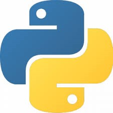

Getting Started
Historisches
{kind=link}
Python ist eine Programmiersprache, die im Jahr 1991 erstmals erschienen ist. Sein "Erfinder“ Guido van Rossum hat die Programmiersprache im Übrigen nach der britischen Komikertruppe "Monty Python“ (z.B. "Das Leben des Brian“) benannt und nicht etwa nach der Schlange. Trotzdem hat sich eingebürgert - weil naheliegend - das ein stilisierte Python-Schlange als Icon symbolisch für die Programmiersprache steht.
Python hat also bereits eine lange Geschichte hinter sich. Heute liegt die Verantwortung für die Weiterentwicklung nicht mehr bei Guido van Rossum, sondern bei der Python Software Foundation.
Das Besondere an Python ist, dass es mehrere sog. Programmierparadigmen unterstützt und als Programminterpreter arbeitet und nicht als Compiler (wie z.B. C/C++ oder Java). Die kostenlose und breite Verfügbarkeit auf vielen Plattformen sowie die schiere Unmenge an sehr mächtigen Programmbibliotheken haben sehr zur starken Verbreitung von Python beigetragen: mit relativ wenigen Codezeilen kann sehr viel Funktionalität erzielt werden. Insbesondere im Bereich des Maschinellen Lernens ist Python DER Standard zur Programmierung. Nicht zuletzt die große Menge an online verfügbarer Dokumentation, Tutorials und Hilfsforen in Kombination mit der leichten Erlernbarkeit ist immenser Pluspunkt für Python.
Weitere Informationen zur Python-Historie lassen sich z.B. Wikipedia oder GeeksForGeeks entnehmen.
Installation
Für unsere Arbeit mit Python benötigen wir zunächst einen Rechner (oder eine Virtuelle Maschine) mit einem der Betriebssysteme Linux, Windows oder MacOS. Dies kann ein PC, ein Notebook oder auch ein Raspberry Pi (4 oder 5) sein. (Grundsätzlich lässt sich sagen, dass Linux die Programmentwicklung (gleich in welcher Programmiersprache) am besten unterstützt und den Programmieren am wenigsten Steine in den Weg legt.)
Zur Entwicklung von Python-Programmen müssen wir auf unserer Plattform zwei Dinge installieren:
eine Python-Distribution (mindestens Version 3.8.10)
eine Entwicklungsumgebung (IDE = Integrated Development Environment) mit Editor
Installation einer Python-Distribution
Zur Installation von Python auf einem Rechner (oder in einer Virtuellen Maschine) gibt es je nach Plattform eine Reihe von Alternativen:
Unter Linux ist i.d.R. Python bereits vorinstalliert, so dass zunächst keine Aktion erforderlich ist, solange sichergestellt ist, dass die Version mindestens 3.8.10 entspricht.
Unter Windows und MacOS muss Python gesondert installiert werden. Hierzu gibt es mehrere Alternativen, wobei die zweite und dritte Variante auch für Linux-Installationen gültig sind:
aus dem APP-Shop/Store von Microsoft bzw. Apple
durch Herunterladen einer Distribution von http://www.python.org
durch Herunterladen der Anaconda-Distribution von http://www.anaconda.com
Zu empfehlen ist Variante b, da sie die "originären“ Distributionen ohne weitere distributionsspezfischen Ergänzungen und Abhängigkeiten darstellt und für unsere Zwecke vollkommen ausreichend ist.
Bei der Installation folgen wir den Hinweisen auf den entsprechenden Seiten. Am besten ist es, nicht die Standardinstallation mit Default-Einstellungen durchzuführen, sondern eine individuelle Installation durchzuführen. Wichtig ist nämlich, dass die Pythondistribution in den (Such-)Pfad aufgenommen wird, was standardmäßig meist nicht der Fall ist.
Installation einer Entwicklungsumgebung
In jeder Python-Distribution ist mit IDLE bereits eine funktionsfähige Entwicklungsumgebung enthalten. Diese ist aber sehr einfach gehalten, weshalb die meisten Entwickler früher oder später auf eine komfortablere IDE umsteigen. Dabei gibt es eine Reihe speziell auf Python zugeschnittener IDEs, hier eine Auswahl populärer Vertreter:
Auf der anderen Seite gibt es eine Reihe sehr mächtiger flexibler IDEs, die für unterschiedliche Aufgaben durch Plugins/Extensions konfiguriert werden können - neben Python beispielsweise auch C/C++, C#, Java, JavaScript, LaTeX und weitere. Die Nutzung einer solchen IDE hat den Vorteil, dass man sich darin schon auskennt, wenn man häufiger auch Aufgaben jenseits von Python entwickelt. Eine Auswahl dieser Umgebungen ist:
Eclipse (das o.a. PyDev ist eigentlich ein Plugin für Eclipse)
Visual Studio Code (nicht zu verwechseln mit dem Microsoft Visual Studio)
Der Vorteil dieser universelleren IDEs ist gleichzeitig deren Nachteil: sie wirken auf Anfänger manchmal recht überladen und unübersichtlich. Trotzdem ist die Empfehlung im Rahmen dieses Kurses die Nutzung von Visual Studio Code (kurz VS Code), weil es eine moderne und extrem flexible IDE darstellt, die auf allen o.a. Plattformen verfügbar ist.
Test der Installation
Test in der Konsole
Für den ersten Test öffnen wir ein Konsolenfenster (Shell/PowerShell/…), am besten in unserem 'home‘-Verzeichnis, in dem die benutzerbezogenen Daten abgelegt sind. Dann starten wir Python durch Aufruf von 'python‘. Unter Windows 10 sieht das Ganze in der PowerShell dann so aus:
Falls Python nicht gestartet werden kann, gibt es zwei potentielle Fehlerquellen:
die Python-Distribution ist nicht im (Such-)Pfad enthalten
der Aufruf von Python muss mit 'python3‘ erfolgen
Der zweite Fall tritt vor allem auf Linux-Systemen auf, weil parallel eventuell noch eine (ältere) Python-2.x-Version installiert ist.
Wir können jetzt noch etwas mit Python "spielen“ und Python als eine Art "Taschenrechner“ nutzen:
Wir geben dabei die Berechnung ein und Starten die Berechnung mit der 'RETURN‘-Taste. Jetzt werden wir etwas mutiger und probieren es mal mit einer trigonometrischen Funktion:
Ooops, da kennt Python doch glatt die Sinus-Funktion nicht. Soweit ist es also mit dem Taschenrechner doch nicht her in Python! Wir werden später sehen, wie es trotzdem klappt.
Einrichten einer Virtuellen Umgebung
Als nächstes werden wir uns eine sog. Virtuelle Umgebung anlegen, in der wir arbeiten werden. Wie wir beim Herunterladen der Python-Distribution gesehen haben, gibt es eine Vielzahl verschiedenster Python-Versionen. Manchmal kann es nun sein, dass bestimmte Python-Programme, die wir von dritter Seite beziehen nur mit oder ab einer bestimmten Version lauffähig sind. Dann müssten wir entweder unsere bisherige Version deinstallieren - auf die Gefahr hin, dass dann andere Programme nicht mehr laufen - oder wir installieren eine zweite Version parallel zur ersten Version. Damit sich die verschiedenen Versionen in diesen Fällen nicht in die Quere kommen, gibt es die o.a. Virtuellen Umgebungen.
Wir öffnen wieder eine Konsole in unserem 'home‘-Verzeichnis und legen dort zunächst ein neues Verzeichnis an, in dem Python unsere virtuelle Umgebung anlegen soll, z.B. mit 'mkdir venv‘. Danach legen wir die virtuelle Umgebung so an, wie es in der offiziellen Python-Dokumentation (venv) beschrieben ist:
python -m venv /path/to/new/virtual/environment
Dabei setzen wir natürlich für '/path/to/new/virtual/environment‘ unser eben angelegtes Verzeichnis als Pfad, den wir noch um den Namen unserer Umgebung ergänzen:
In diesem Fall hat die Umgebung den Namen 'venv_ipp_38‘ erhalten, um auszudrücken, dass diese für die Verwendung im Rahmen dieser Lehrveranstaltung angelegt ist und die verwendete Python-Version 3.8 ist. (Dies können Sie auf Ihrem Rechner natürlich so machen, wie es Ihnen passt!)
Das Anlegen der virtuellen Umgebung dauert einen kleinen Moment, weil Python eine Kopie der Hauptinstallation in der virtuellen Umgebung anlegt. Um nun auch in der virtuellen Umgebung arbeiten zu können, müssen wir diese noch aktivieren. Dazu wechseln wir in das Verzeichnis '/path/to/new/virtual/environment/Scripts‘ und führen dort das Shellskript 'activate‘ aus - je nach Betriebssystem sieht das Ganze etwas unterschiedlich aus, macht aber im Prinzip dasselbe. Unter Windows 10 sieht es wie folgt aus:
Unter Linux und MacOS sieht das Vorgehen in der Shell ein klein wenig anders aus:
Wir sehen, dass uns die aktivierte virtuelle Umgebung am Anfang des Prompts (so heißt die Eingabeaufforderung) angezeigt wird. In der Umgebung können wir jetzt wieder den Python-Interpreter mit 'python‘ starten (und diesen mit 'exit()‘ wieder verlassen). Um die virtuelle Umgebung wieder zu verlassen, gibt es - ebenfalls im Unterverzeichnis 'Scripts‘ ein Shellskript namens 'deactivate‘.
Merke
Die virtuelle Umgebung ist immer nur in der Konsole aktiv, in der wir sie auch aktiviert haben. Öffnen wir eine weitere Konsole, so ist dort standardmäßig wieder die systemweite Python-Installation aktiv. Wir können die virtuelle Umgebung aber in beliebig vielen Konsolen aktivieren. Diese greifen dann alle auf die gleiche (virtuelle) Python-Umgebung zu. Es steht uns aber auch frei, beliebige weitere virtuelle Umgebungen anzulegen und dort andere Python-Versionen zu installieren.
Einrichten einer IDE
Aufgrund der Vielzahl möglicher IDEs, die wir nutzen könnten, wird hier auf eine Darstellung der Einrichtung für jede einzelne IDE verzichtet - im Internet gibt es dazu reichlich Anleitungen.
Auf zwei wichtige Dinge soll an dieser Stelle aber hingewiesen werden, auf zu achten ist, bei der Einrichtung der IDE:
Die Programme, die wir schreiben werden, können i.d.R. direkt aus der IDE heraus ausgeführt werden. Damit es hierbei keine Probleme gibt, muss die IDE die Programme innerhalb unserer oben angelegten virtuellen Umgebung starten. Beim Einsatz von VS Code erfolgt die Verwendung der virtuellen Umgebung ganz einfach, indem man die IDE aus einer Konsole, in der die virtuelle Umgebung aktiv ist, startet:
(venv_ipp38) PS C:\Users\holtv\venv\venv_ipp38> code .
Sofern eine universelle (also keine python-spezifische) IDE eingesetzt wird, muss i.d.R. ein Plugin/Extension installiert werden, welche die IDE für die Verwendung mit Python anpasst. Im Falle von VS Code wird einem die Installation einer solchen Extension automatisch beim Erstellen des ersten Python-Programms angeboten - man hat sogar die Auswahl zwischen mehreren dieser Erweiterungen.
Um jetzt Python-Programme zu erstellen, ist es unbedingt sinnvoll, diese in einem eigenen Projektordner anzulegen, beispielsweise so:
Alle weiteren Schritte zur praktischen Programmentwicklung mithilfe einer IDE werden wir dann im Rahmen der Übungen kennenlernen.
Dokumentation und Hilfe
Da dieser Kurs die Methode des Kollaborativen Lernens einsetzt, ist die Nutzung von zusätzlichen Informationsquellen fester Bestandteil der Arbeit. Hierzu zählen nicht zuletzt die anderen Teilnehmenden, aber natürlich auch diverse Webseiten mit Dokumentation, Tutorials und Hilfsforen in Textform oder als Video. Auch, wenn es etwas altmodisch klingt, aber auch Bücher können einem weiterhelfen.
Merke
Da Englisch die Standardsprache im programmiertechnischen Bereich ist, kommt man i.d.R. nicht um englischsprachige Materialien herum. Es gibt zwar auch Angebote in deutscher Sprache, aber diese sind zahlenmäßig erheblich kleiner als die englischsprachigen Angebote. Auch die folgenden Links enthalten daher Verweise auf Angebote in beiden Sprachen.
Bücher
Bücher zum Thema Programmieren leiden oft darunter, dass die Autoren den Drang nach Vollständigkeit der Darstellung in allen Details haben. Dadurch werden die Bücher dick und sind ermüdend zu lesen. Zudem gehen die großen Linien der Programmierung vor lauter Details oft verloren gehen ("Den Wald vor lauter Bäumen nicht sehen.“). Als Zwischenweg zwischen episch breit angelegten Lehrbüchern und Tutorials auf der einen Seite und der oftmals erschlagenden Google-Suche empfehle ich Ihnen deshalb ein Buch, dass den Sprachumfang von Python komplett abdeckt und trotzdem knapp geschrieben ist:
Kofler: Python - der Grundkurs (Rheinwerk Verlag, 14,90€)
Das vorgenannte Buch gibt leider nicht in der Bibliothek, dafür gibt es dort folgende Lehrbücher zum Thema Python:
Kaminski: Python 3
Klein: Python 3
Pilgrim: Python 3 Intensivkurs
Schäfer: Schnellstart Python
Woyand: Python für Ingenieure
Als Lehrbuch für die Grundzüge der Programmiersprache (insbesondere für Programmieranfänger) empfehle ich das o.a. Buch von Woyand.
Darüberhinaus gibt es noch ein im Internet herunterladbares Buch in englischer Sprache:
Matthes: Python Crash Course (das Buch gibt es auch in deutscher Sprache, allerdings nicht kostenfrei)
Internet
Die Python Foundation hostet die offizielle Dokumentation.
Real Python stellt viele allgemeine Tutorials aber auch jede Menge Hilfen zu spezielleren Themen zur Verfügung. Ein großer Teil ist kostenfrei, es gibt aber auch kostenpflichtige Angebote.
GeeksForGeeks ist - ähnlich zu Real Python eine Seite mit Hilfestellungen zu allen Fragen rund um Python.
YouTube bietet viele Videos mit Tutorials zu allgemeinen oder auch speziellen Themen der Python-Programmierung an. Die Videos sind - wie üblich - von sehr unterschiedlicher Qualität. Auch die o.a. "Real Python“ und "GeeksForGeeks“ sind auf YouTube präsent. In jedem Fall sind die Videos eine gute Gelegenheit ein paar echte Nerds zu erleben!